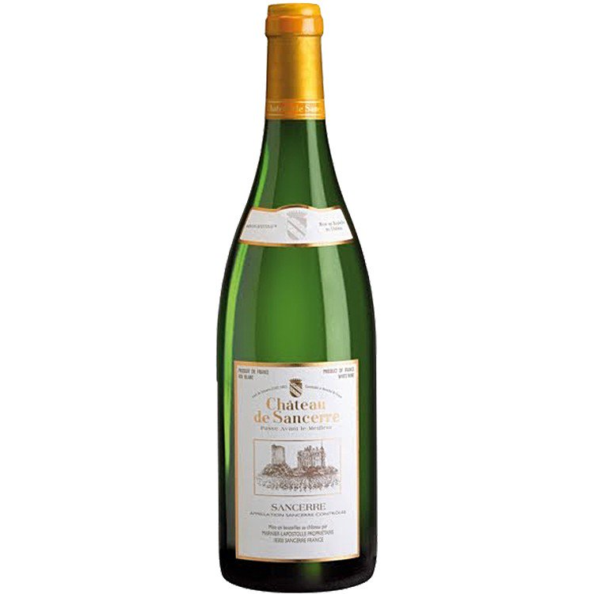

 Sancerre is the most recognizable appellation for French Sauvignon Blanc in the Loire Valley. The region’s rolling limestone hills and semi-continental climate deliver richly textured Sauvignon Blanc wines with ripe gooseberry aromas, bracing acidity, and flinty-smoke flavors.
TASTING NOTES
- Body: Light to Medium
- Acidity: Medium to High
- Fruit: Medium to Full
- Taste: Bright minerality with notes of limestone and tropical fruit
- first it's necessary to talk about phylloxera. The aphid epidemic hit Sancerre in the late 19th century, and vintners fought it valiantly for several decades to no avail. The only solution was to replant with a different grape: Sauvignon Blanc, used in the whites we love today. To ensure the health of the newly introduced grapes, vines were grafted onto healthy American rootstock. The new Sancerre received AOC status in 1936.
- World War II inadvertently helped put Sancerre on the map. After Parisian weekenders could no longer visit the beaches in Normandy, more of them began coming to Sancerre instead, where they discovered the region's appealing wines.
- Today, wine and gastronomic tourism are essential to Sancerre's economy. If you love the wines, consider visiting this extremely charming part of France.